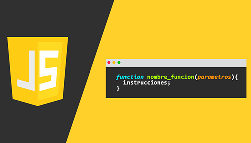

Callback Hell
Asynchronous JavaScript
For reasons illustrated earlier (e.g. related to blocking), many Web API features now use asynchronous code to run, especially those that access or fetch some kind of resource from an external device, such as fetching a file from the network, accessing a database and returning data from it, accessing a video stream from a web cam, or broadcasting the display to a VR headset. Why is this difficult to get to work using synchronous code? Let's look at a quick example. When you fetch an image from a server, you can't return the result immediately. That means that the following (pseudocode) wouldn't work: